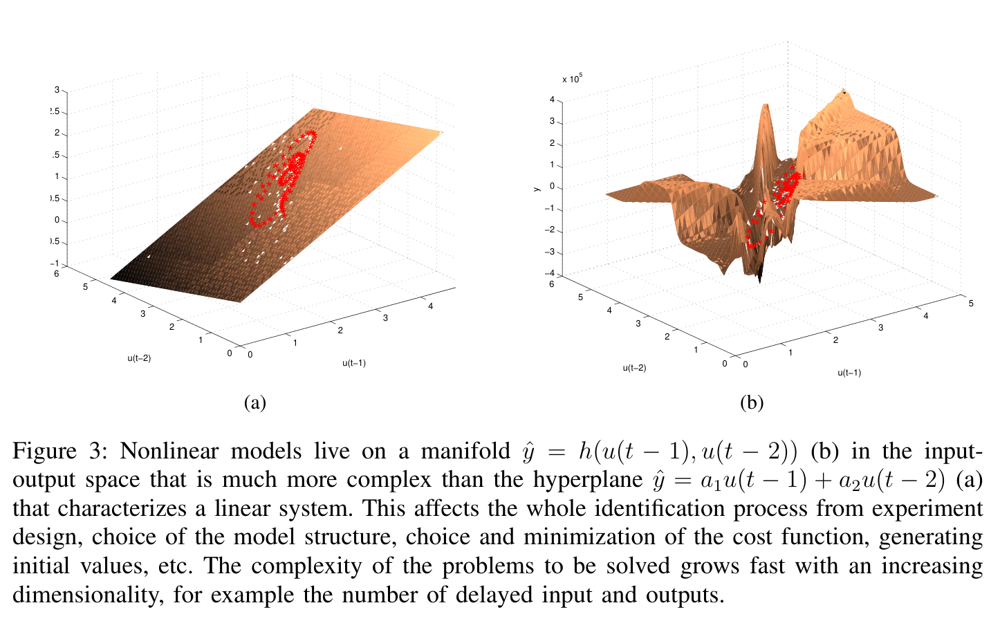
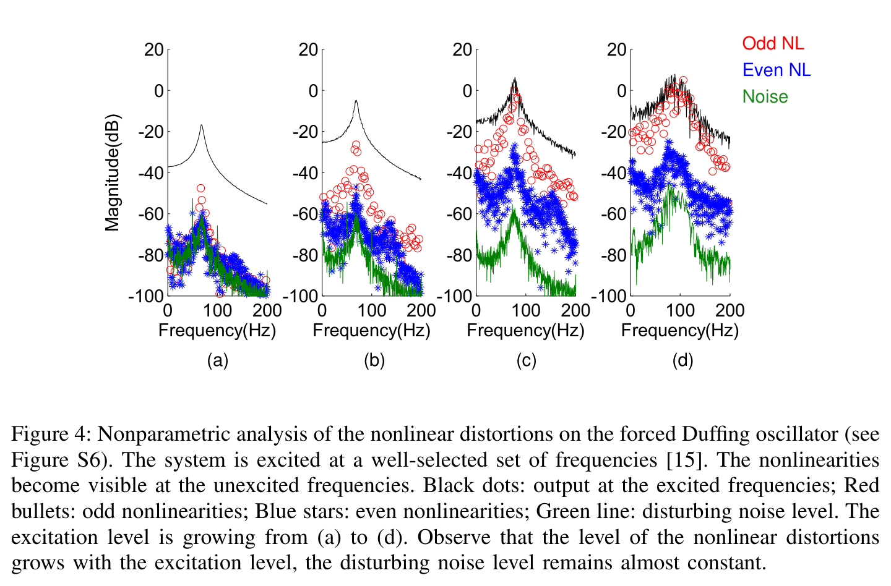
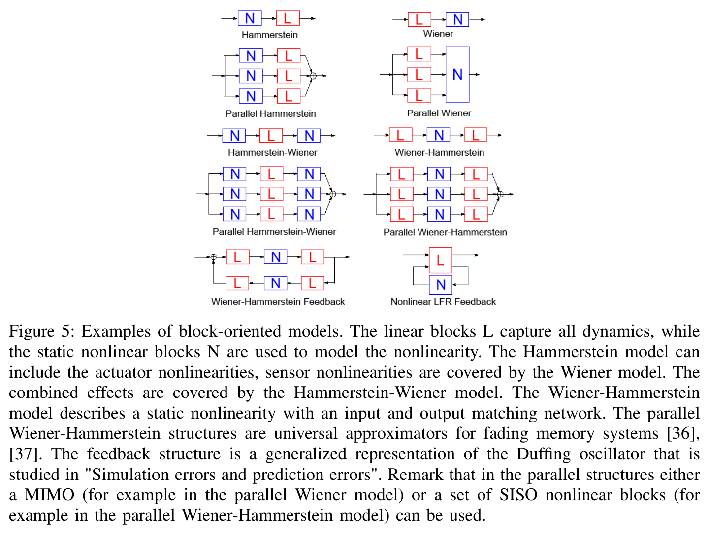
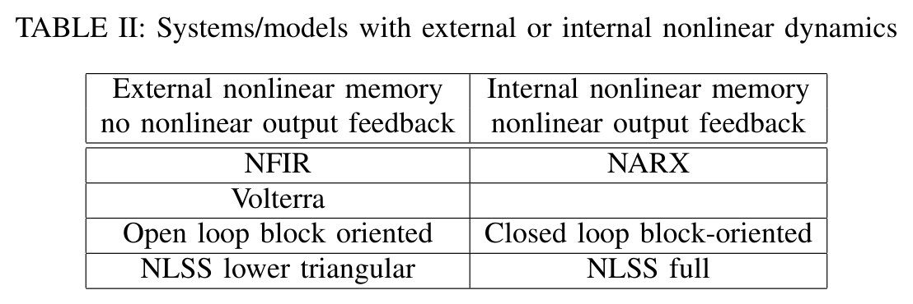
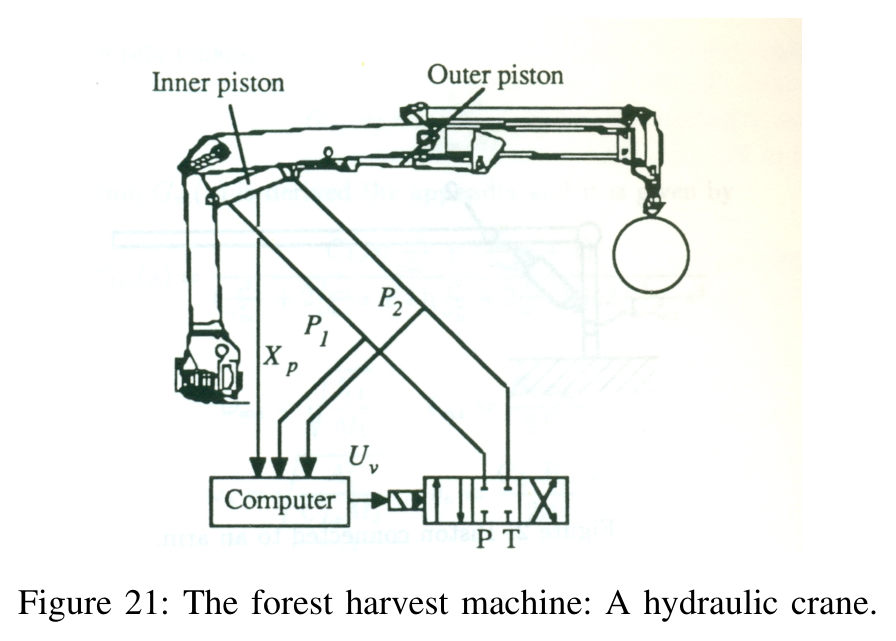
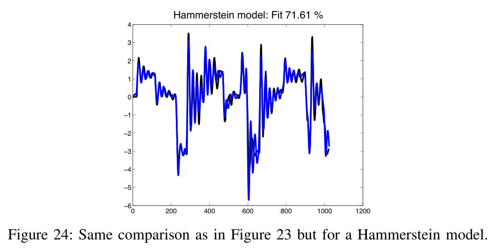
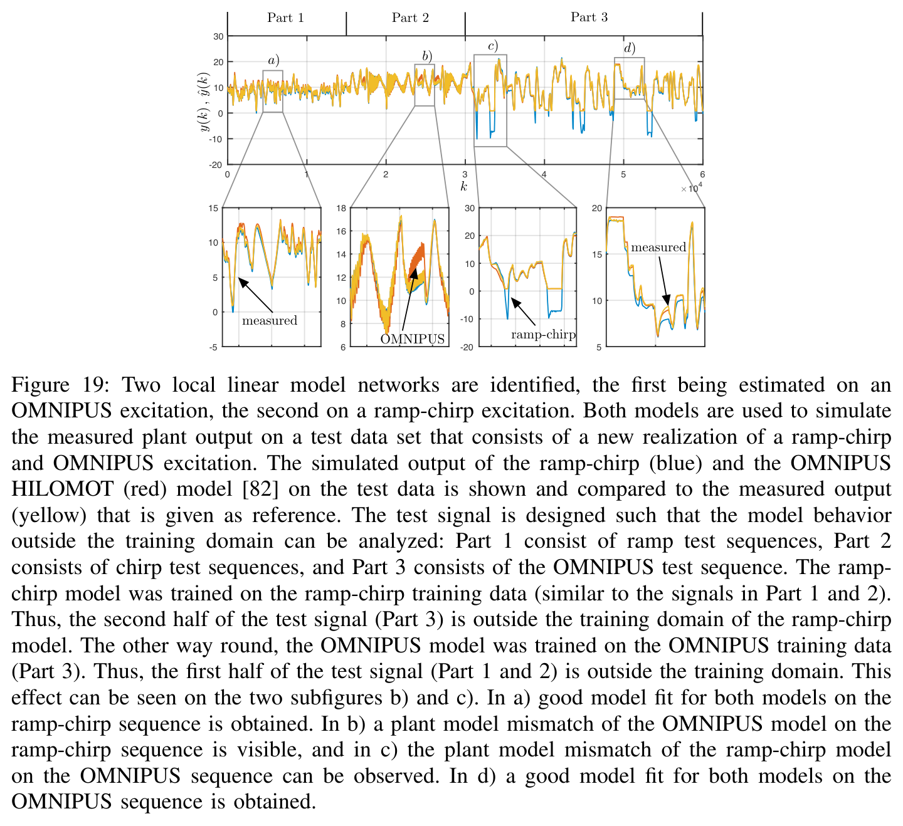
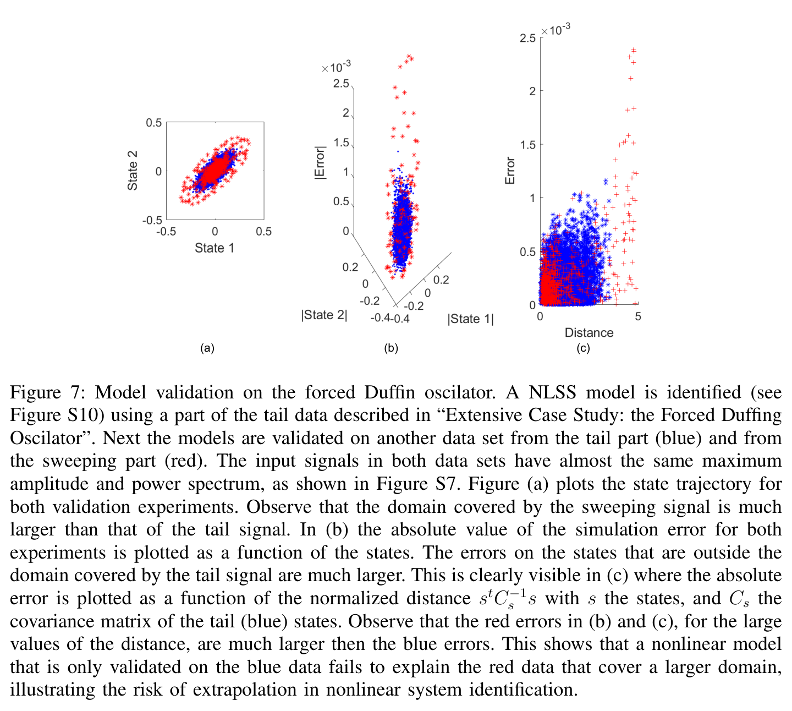
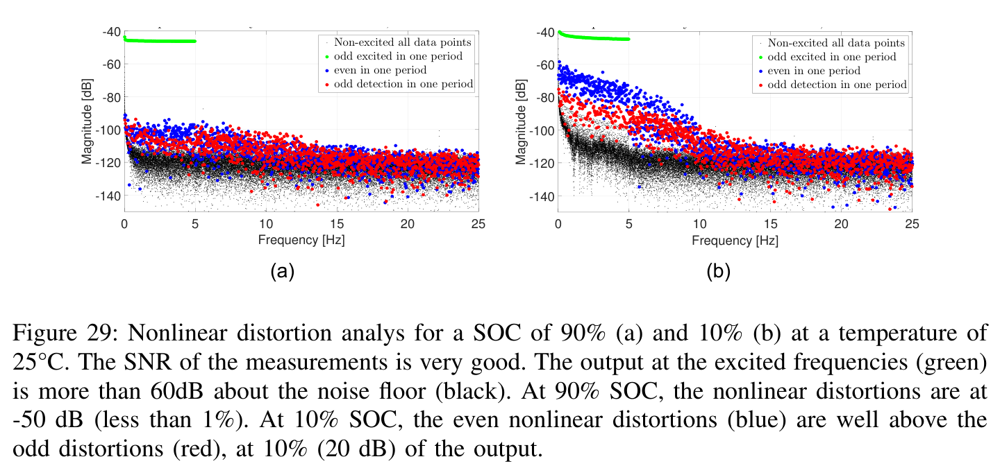

좋은 식별은 모델 선택보다 앞에서 시작된다
비선형 시스템 식별의 첫 질문은 “어떤 알고리즘을 쓸까”가 아니라 “비선형이 얼마나 크고, 어디에 있는가”다. 이 논문은 주기 가진을 이용한 비모수 왜곡 분석에서 출발해 물리 지식의 양에 따른 모델 선택, 구조 모델 오차를 고려한 추정, 새로운 입력과 상태 영역을 통한 검증으로 이어지는 실무 지도를 제시한다. 탱크·완충조·연료 공급계·유압 크레인·뇌·배터리의 여섯 사례를 관통하는 메시지는 같다. 모델의 복잡도만큼 중요한 것은 무엇을 측정했고, 어디에서 사용할 것인가다.
먼저 읽는 네 가지 발견
선형의 한계를 먼저 관측할 수 있다
멀티사인은 모델을 맞추기 전에 비선형 왜곡과 잡음 바닥을 분리해 보여 준다.
작은 구조 변경이 큰 차이를 만든다
유압 크레인은 입력단 정적 비선형을 추가하자 적합률이 42%에서 72%로 높아졌다.
최선의 모델도 입력에 따라 달라진다
구조 오차가 남으면 실험 입력과 비용 함수가 추정 결과의 의미를 결정한다.
진폭과 주파수가 같아도 검증은 실패한다
서로 다른 입력이 방문하는 상태 영역까지 같다는 보장은 없다.
비선형 모델은 관측하지 않은 영역을 보장하지 않는다
선형 모델의 익숙한 직관은 비선형으로 넘어가는 순간 약해진다. 같은 진폭과 주파수 대역을 확보했더라도, 시스템이 실제로 지나가는 상태 영역은 다를 수 있다.

따라서 관심 영역 전체를 실험으로 덮는 일이 출발점이다. 진폭 범위와 주파수 대역의 일치는 필요조건이지만 충분조건은 아니다. 학습 데이터 밖으로 나갈수록 모델의 성능을 별도로 확인해야 한다.
또 하나의 차이는 오차의 성격이다. 선택한 모델 구조로 실제 시스템을 완전히 표현하지 못하는 구조 모델 오차가 측정 잡음보다 클 수 있다. 이때 잡음만을 중심으로 설계한 최대우도 비용 함수, 이론 공분산, 잔차 백색성 검정만으로 모델의 신뢰도를 설명하기 어렵다.
잡음이 어디에 들어오는지도 중요하다
y = (u + w)2 + v프로세스 잡음 w가 제곱 비선형 앞에 들어가면, 전개된 식에는 2uw와 w2가 생긴다. 잡음 자체가 평균 0이어도 출력 교란은 평균이 0이 아닐 수 있고 입력에도 종속된다. 단순히 출력에 독립 잡음이 더해진다는 가정이 깨지는 이유다.
선형으로 충분한가? 모델 없이 먼저 재기
랜덤 위상 멀티사인은 여러 주파수의 사인파를 합친 주기 입력이다. 관심 대역의 진폭을 정하고, 각 성분에 서로 독립적인 랜덤 위상을 부여한다. 여기서 일부 주파수를 의도적으로 비워 두면 비선형이 만들어 낸 성분을 관측할 수 있다.
| 기호 | 의미와 역할 |
|---|---|
| f0 | 주파수 분해능. 주기는 T = 1/f0 = N/fs다. |
| Uk | 각 주파수의 진폭. 홀수 성분만 가진하고 일부 홀수 성분도 비워 두면 짝수·홀수 왜곡을 분리해 관측한다. |
| φk | 서로 독립인 랜덤 위상. 위상 실현을 바꿔 여러 번 측정한다. |
| fs, N | 표본 주파수와 한 주기의 표본 수. 반복 주기의 차이를 통해 잡음 수준을 추정한다. |

선형 시스템은 입력 주파수를 옮기지 못한다.
비워 둔 주파수가 비선형을 드러내는 관측창이 된다.
주기 정상상태에서 누설과 잡음을 구분할 수 있도록 실험하면, 비가진 주파수에 나타난 출력 성분으로 비선형 왜곡을 평가할 수 있다. 주기 반복 간 차이는 잡음 바닥을 알려 준다. 왜곡과 잡음 바닥의 간격은 비선형 모델로 줄일 수 있는 오차의 여지를 가늠하는 기준이다. 실제 개선 폭은 모델 구조와 추정·검증 결과에 달려 있다.
사인 스윕은 공진계에서 고조파가 감쇠되면서 비선형을 작게 보이게 할 수 있다. 논문은 주기 가진이 가능하다면 멀티사인 분석을 먼저 수행하라고 권한다. 선형 식별과 비슷한 실험 부담으로, 이후 모델링의 필요성과 방향을 판단할 수 있기 때문이다.
알고 있는 물리만큼, 모델의 색을 고른다
모델 팔레트는 성능 순위가 아니다. 물리식을 얼마나 알고 있는지, 비선형이 시스템의 어느 위치에 있는지에 따라 선택지를 정리한 지도다.
| 색 | 모델 계열 | 무엇을 이용하나 | 논문 사례 |
|---|---|---|---|
| 흰색 | 제1원리 | 물리식으로 구성. 팔레트상 식별이 없는 기준점이며 Modelica 계열이 예시다. | — |
| 회백색 | Off-white | 알려진 물리식의 일부 상수를 추정한다. | 2단 탱크 |
| 연회색 | 반물리 모델 | 정성적 물리 지식으로 변수나 시간축을 변환한다. | 펄프 완충조 |
| 강회색 | 국소 선형·LPV | 운전점별 선형 모델을 연결한다. | 고압 연료 공급계 |
| 청회색 | 블록 지향 | 선형 동역학과 정적 비선형을 조합한다. | 유압 크레인 |
| 검은색 | NARX·NLSS·볼테라 | 범용 근사기로 비선형 관계를 표현한다. | 뇌·리튬 배터리 |

Hammerstein 구조는 액추에이터처럼 입력단에 있는 비선형을, Wiener 구조는 센서처럼 출력단에 있는 비선형을 표현하기에 자연스럽다. 병렬 구조는 페이딩 메모리 시스템을 근사하는 데 쓰이며, Duffing 진동자처럼 내부 비선형이 중요한 시스템에는 피드백 구조가 필요할 수 있다.

물리식이 있다고 추정 상수가 곧 물리 상수인 것은 아니다
탱크 사례는 손실항 두 개를 추가하자 적합 오차가 5.93%에서 1.78%로 감소했다. 논문은 이 개선을 손실 자체의 효과만으로 보기 어렵다고 해석한다. 누락된 현상이 있으면 추정 상수가 다른 결함까지 보상하며, 물리적 의미가 흐려질 수 있다.
한 스텝 예측과 시뮬레이션을 구별하라
표본율이 높으면 최근 측정값을 활용하는 한 스텝 예측은 단순 모델로도 잘 맞을 수 있다. 반면 시뮬레이션은 모델이 스스로 동역학을 재현해야 한다. 탱크의 GP-NARX 사례에서 예측 오차는 0.057%, 시뮬레이션 오차는 4.62%였다. 어떤 지표를 보고 있는지에 따라 같은 모델의 인상이 달라진다.
유압 크레인: 비선형 하나를 제자리에 놓는 효과
기계 구조가 만드는 공진과 유압 압력에서 힘으로 이어지는 비선형을 분리하면, 비교적 단순한 구조 변경으로도 설명력이 높아진다.

5차 선형 모델 앞에 정적 비선형을 추가하다
입력단에 포화를 표현하는 구간 선형 정적 비선형을 붙이자 적합률이 30%포인트 높아졌다. “입력 비선형 + 선형 동역학”이라는 선택은 성능뿐 아니라 시스템의 물리적 해석과도 연결된다.

이 수치는 오차율이나 결정계수와 같은 지표가 아니다. 측정 평균을 기준으로 한 출력 변동에 비해 시뮬레이션 오차가 얼마나 작은지를 나타낸다. 실무적 교훈은 분명하다. 입력단 비선형이 의심된다면, 복잡한 범용 모델에 앞서 Hammerstein 구조를 시험할 근거가 있다.
일반화의 경계는 실험이 그린다
고압 연료 공급계 사례는 입력 3개, 출력 1개인 시스템에 국소 선형 모델망을 적용한다. 램프·처프와 최적화된 계단 입력은 서로 다른 방식으로 시스템을 움직인다. 한쪽에서 잘 맞은 모델이 다른 쪽에서도 잘 맞는 것은 아니다.

OMNIPUS 계단 열은 운전점이 관심 영역에 고루 퍼지도록 설계한다. 계단의 지속 시간은 지배 시정수를 고려하고, 진폭과 기울기 제약도 지킨다. 이는 단순히 입력을 크게 흔드는 것과 다르다. 시스템이 어떤 조합의 상태와 운전점을 실제로 방문하는지가 핵심이다.
같은 데이터의 가우시안 프로세스 모델은 입력 설계에 덜 민감했지만, 실험이 덮지 못한 영역의 문제를 없애지는 못했다. 이 사례는 모델 종류를 바꾸는 일보다 실험 설계가 더 큰 영향을 줄 수 있음을 보여 준다.
최적 입력도 가정 안에서만 최적이다
Fisher 정보에 기반한 입력 설계는 구조 오차가 없다는 가정에 의존한다. 비선형 시스템에서는 주파수 스펙트럼뿐 아니라 진폭 분포도 중요하다. 모든 시스템에 통하는 하나의 최적 입력은 기대하기 어렵다.
구조 오차가 크면, 통계의 사용법도 바뀐다
모델과 측정값의 차이를 전부 잡음으로 취급하면 중요한 원인을 놓친다. 논문은 오차를 예측할 수 없는 성분, 모델 구조의 한계, 유한한 데이터에 따른 추정 변동으로 나누어 본다.
“가장 좋은 모델”은 하나로 고정되지 않는다.
어떤 입력으로 물었는지에 따라 답이 바뀐다.
구조 오차가 남으면 최선의 파라미터 θ*u 자체가 입력 조건에 따라 달라진다. 가우시안 가진과 사인 가진에서 최선인 단순 모델이 서로 다를 수 있다는 뜻이다. 잡음만 가정한 공분산은 이 차이를 포착하지 못해 실제 변동을 과소평가할 수 있다.
| 결정 | 실무 기준 |
|---|---|
| 실험 입력 | 나중에 사용할 입력과 같은 종류의 입력을 포함한다. |
| 비용 함수 | 잡음 분산만으로 가중하지 않고, 실제로 오차가 작아야 하는 대역과 용도를 반영한다. |
| 불확실성 | 검증에 실패한 모델의 이론 경계에 의존하지 않는다. 가진 실현을 바꾸어 반복하고 결과의 흩어짐을 관측한다. |
반복 실험도 관측하지 않은 영역까지 보증하지는 않는다. 다만 실제 조건에서 나타나는 변동을 직접 확인함으로써, 이론적인 오차 막대가 놓친 부분을 드러낼 수 있다.
새 데이터만으로는 부족하다. 다른 움직임으로 시험하라
검증 데이터가 학습 데이터와 분리되어 있어도, 같은 종류의 입력만 반복하면 모델의 약점을 놓칠 수 있다. Duffing 진동자는 진폭과 스펙트럼이 비슷한 입력조차 서로 다른 상태 영역을 방문할 수 있음을 보여 준다.

검증에서 확인할 네 가지
- 독립 데이터: 교차 검증으로 시뮬레이션 적합률과 k 스텝 예측 성능을 확인했는가?
- 잔차의 위치: 주기 가진의 왜곡 그림에 잔차를 겹쳐, 잡음 바닥과 남은 짝수·홀수 왜곡을 비교했는가?
- 입력의 종류: 학습 때와 다른 종류의 입력에서도 모델을 시험했는가?
- 상태 영역: 검증 궤적이 학습 궤적이 덮은 영역 안에 있는지 확인했는가?
잔차 자기상관과 입력·잔차 교차상관 같은 선형 검증 도구는 2차 모멘트를 본다. 따라서 이 검정만으로 모든 비선형 의존성이 사라졌다고 판단할 수 없다. 고차 모멘트 검정은 더 많은 데이터를 요구해 실무 적용이 쉽지 않다.
배터리: 운전점에 따라 선형의 충분성이 달라진다

배터리 사례의 3상태·3차 다항 NLSS 모델은 선형 모델보다 약 10배 개선된 결과를 보였지만, 잔차는 여전히 잡음 바닥 위에 남았다. 다항 기저는 학습 영역 밖에서 발산해 검증 중 불안정해지기도 했다. 개선되었다는 사실과 충분히 검증되었다는 판단은 별개다.
이 로드맵이 남겨 둔 문제
- 저자들의 경험을 바탕으로 선택한 안내서이며, 시변 시스템과 카오스의 본격적인 식별은 범위 밖이다.
- 프로세스 잡음이 비선형 앞에 들어오는 경우에는 입자 필터 등 계산 부담이 큰 도구가 필요할 수 있다.
- 구조 오차가 존재할 때 믿을 만한 불확실성 경계를 만드는 문제는 논문에서 미해결 과제로 남는다.
이 범위와 한계는 2019년 논문에 대한 요약이며, 이후 연구 동향 전체를 평가한 것은 아니다.
HR35에 옮겨 보면:
트윈보다 먼저, 축별 실험부터
다음은 원 노트 작성자의 HR35 적용 의견을 실험 과제로 정리한 것이다. 논문이 HR35에서 검증한 결과는 아니다. 제시된 대역·주기·모델 차수는 장비 응답과 데이터로 확인해야 할 초기 후보값이다.
첫 실차 실험은 왜곡과 잡음의 분리
조이스틱 명령을 CAN으로 주입할 수 있다는 전제에서, 축별 홀수 랜덤 위상 멀티사인을 먼저 시도한다. 노트는 파일럿 단 응답이 약 0.5 Hz라는 가정 아래 0.05–1 Hz 대역, 20–60초 주기, 3개 이상의 위상 실현을 초기안으로 제시한다. 주기와 가진 주파수는 f0 = 1/T의 정수배 격자에 맞춰 함께 정해야 한다.
기대 산출물은 축별 왜곡 수준과 잡음 바닥이다. 아주대 PID 레인의 선형 설계와 서울대 MPC 레인의 비선형 예측 모델 필요성을 판단할 근거로 삼되, 실제 제어 요구 성능과 함께 평가한다.
붐·암에 축별 Hammerstein부터 시험
입력단의 데드밴드·포화와 뒤따르는 기계 동역학을 분리할 수 있는지 확인한다. 초기 구조는 조이스틱→유량 정적 곡선 + 2–5차 선형 동역학이다. 이를 통해 얻는 비선형 곡선과 고유진동수는 전체 유압 트윈을 맞추기 전에 사용할 비교 기준이 된다.
논문의 크레인은 압력을 입력으로 사용한다. HR35의 조이스틱 입력으로 확장하면 밸브·파일럿 동역학까지 포함되므로, 같은 구조가 충분한지는 별도 검증해야 한다. 원 노트의 “하루 안에 식별”은 작업 목표이지 보장된 소요 시간이 아니다.
트윈의 빈틈을 메운 값을 물리 상수로 보고하지 않기
원 노트는 현재 트윈에 펌프·LS·MCV 유량 공유가 빠져 있다고 본다. 이 조건에서 체적탄성계수 β, 보어, 유량계수 Cd를 맞추면 누락된 현상을 흡수하는 유효 상수가 될 수 있다. β를 “계통 강성의 대용값”으로 해석하는 것과, 재료의 물리 상수로 단정하는 것을 구분해야 한다.
주요 판정 지표는 회차별 시뮬레이션 적합률
20 Hz 한 스텝 예측만으로 트윈의 신뢰도를 판단하지 않는다. 회차별 홀드아웃 데이터에 식 (28)의 시뮬레이션 적합률을 적용하고, 공중 스텝·멀티사인·굴착 궤적으로 입력 종류를 바꾼다. 그림 7처럼 상태 영역의 포함 여부도 함께 확인한다.
공중에서 맞춘 모델이 흙과 접촉할 때 어긋나면, 학습 영역 밖의 조건과 누락된 접촉 동역학을 먼저 살핀다. 굴착까지 사용 범위로 삼는다면 그 조건의 검증 역시 완료 기준에 포함된다.
공중 데이터로 유압·기구를, 굴착 데이터로 흙 모델을
흙 반력을 비선형 동역학에 영향을 주는 프로세스 외란으로 취급하면, 단순한 출력 오차 가정으로 충분하지 않을 수 있다. 먼저 공중 데이터로 유압·기구 모델을 식별하고, 이후 굴착 데이터로 흙 모델을 별도 식별하는 두 단계 접근을 검토한다.
외란의 작용 위치와 상태·입력 의존성을 확인해야 한다. 노트에 언급된 Zhao (2020), Egli (2022)는 후속 검토 대상이며, 제공된 정보만으로는 정확한 문헌을 특정하지 않는다.
오차 막대는 같은 조건의 여러 회차에서 얻기
트윈·실차 비교에서는 최소제곱 공분산만 제시하지 않고 반복 회차의 흩어짐을 보고한다. Janot의 IDIM-IV 통계 검정과 병행하는 방안도 원 노트의 제안이다. 다만 검정 실패만으로 구조 오차가 유일한 원인이라고 단정하지 않고, 도구의 가정과 다른 오차 원인을 함께 확인한다.
회전수 변화는 ‘유량 시간’으로 분리할 수 있을까
펌프 유량이 엔진 회전수에 비례한다는 가정이 유효하다면, 완충조 사례처럼 누적 유량에 대응하는 시간축으로 재표본하는 방안을 시험할 수 있다. 엔진 회전수 기록이 있다면 변환 전후의 검증 오차를 비교해 볼 만한 반물리 모델링 가설이다.
다음 모델보다, 다음 실험을 먼저 설계하자
크레인의 42→72% 적합률, 탱크의 5.93→1.78% 오차 감소, 완충조의 21→60% 적합 개선, 배터리의 약 10배 개선은 서로 다른 사례와 지표다. 숫자를 직접 순위화할 수는 없지만, 공통된 방향은 읽을 수 있다. 물리적 구조를 이해하고 그 구조를 드러내는 실험을 설계할 때 모델링의 선택지가 좁혀진다.
새 프로젝트에서 가장 먼저 남길 결과물은 복잡한 모델 파일이 아닐 수도 있다. 왜곡과 잡음을 나눈 그림 한 장, 관심 상태 영역을 덮는 입력 계획, 그리고 모델이 통과해야 할 시뮬레이션 검증 기준이 이후 작업의 품질을 결정한다.
지금의 모델에 항을 더하기 전에 묻자. 우리가 아직 측정하지 않은 것은 무엇인가?
출처와 해석 범위
Johan Schoukens and Lennart Ljung. “Nonlinear System Identification: A User-Oriented Road Map.” IEEE Control Systems Magazine, 39(6), 28–99, 2019.
DOI: 10.1109/MCS.2019.2938121 ·
arXiv 공개 원고
소속: Vrije Universiteit Brussel / TU Eindhoven; Linköping University.
- 작성 근거. 이 글은 제공된 한국어 논문 요약 노트를 공개 기사 형식으로 재구성했다. 모든 원문 문장과 수치를 별도로 대조한 문헌 검토는 아니며, 인용부호로 강조한 핵심 문장도 직접 인용이 아닌 요약·해설이다.
- 그림과 식. 그림 3·4·5·21·24·19·7·29와 표 2는 제공된 로컬 이미지다. 원 논문 번호를 유지했고, 캡션은 노트에 근거해 재서술했다. 식 (27), (28), (S37) 역시 노트의 표기를 따랐다. 그림의 저작권은 해당 권리자에게 있다.
- 수치의 비교. 크레인의 적합률, 탱크의 오차율, 완충조의 적합 개선, 배터리의 개선 배수는 서로 다른 평가 결과다. 하나의 공통 벤치마크로 해석하지 않는다.
- 적용 의견. HR35 실험안과 트윈에 대한 평가는 원 노트 작성자의 의견이다. 입력 대역, 반복 횟수, 차수, 장비 특성은 논문 자체의 HR35 검증 결과가 아니다. Zhao·Egli·Janot 관련 언급은 정확한 서지정보가 제공되지 않아 정식 참고문헌에서 제외했다.